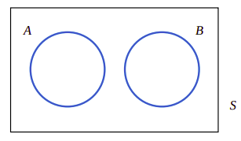

2、概率
心电图常常用于检查患者是否患上心脏病。当心电图出现不正常的模式时，可以判定患者有心脏病。但心电图检查时假阳性(患者正常但根据心电图判定为不正常)的概率为0.1，而假阴性(患者不正常但根据心电图判定为正常)的概率也为0.1。而假定某人患心脏病的先验概率为0.001。假定他声称他有心痛的问题。虽然有假阳性和假阴性的问题干扰我们，但仍然可以了解到依据心电图的结果判定该患者有心脏病的概率仍然会小于0.01。基中包含贝叶斯的概率理论，详情可见Why Clinicians are Natural Bayesians。
这里的关键是如何恰当地组合各种概率。另外同样的这种分析还可以用于其它工程产品或实体结构的检测。利用这类概率分析可以评估科学和工程领域中的风险并为此做出更好的决策。在本章中要介绍概率的基本概念，并将它们用于各种各样问题的风险评估。
本章学习目标
仔细学习本章后，能做到以下几点：
-
理解随机实验的样本空间和事件。
-
解释概率并使用离散样本空间的输出结果的概率来计算事件的概率。
-
计算诸如由独立事件的联合事件和交事件组成的组合事件概率。
-
解释和计算事件的条件概率。
-
确定事件的独立性并使用独立性计算概率
-
使用Bayes理论计算条件概率
-
理解随机变量
2.1、样本空间和事件
2.1.1、随机实验
我们测量铜线中的电流，我们就是在进行一次实验。但是日复一日的测量结果会稍稍有一些不同，因为在我们的实验中还有许多未经控制的变量在影响测量结果，这些变量可能是环境温度、仪器的微小变化、铜线中的微量杂质以及所处的位置，当然还可能有电源飘移。总而言之，这一实验(正如我们进行的许许多多的其它实验一样)，结果中都包含了随机成分。在某些情况下，这种随机成分相对于实验的目标很小，我们可以忽略它们。比如，在搅拌站的称量系统中，一定会存在某种变动，但对最终的混凝土强度结果的影响足够小，仍然能保证我们得到设计要求的混凝土强度，因此我们往往会忽略这些变动，因此会为这些称量的变动设定上下限值。
但是，无论我们在实验中有多么仔细小心，变动总是存在的，并且它的数量足够大以到于会干扰我们由实验数据所做的决策。在这种情况下，本教材为建模和分析实验结果了价值非常高的方法。本教材的目标是要理解、量化和建模常常遇到的变动类型。在分析和思考问题时考虑到这些变动，我们能做出恰当的判断。
图2.1、在模型和物理系统之间的持续改进

包含了变动的模型和分析与其它科学和工程领域中的模型并没有本质的不同。图2.1显示了它们的关键内容。建模就是开发物理系统的数学模型(或抽象)。这种抽象并不需要十分完美。我们可以持续不断在依据测量结果完善模型。比如牛顿力学并不能完美地解释我们所处的物理世界，但它仍然是非常有用的模型，可以用来研究和分析大多数工程产品，可以近似地量化它们性能。假定数学抽象与我们所研究的系统测量相互吻合，则可以利用这个模型去理解、描述并量化系统并预测系统针对输入的响应。从这个观点来看，我们对世界的认识就是一种近似，从这种近似中能抽象出事物的共性，并利用这一共性去研究、解释、描述和量化世界。这是一种科学思维。牛顿力学对于相对论是一种近似，而开普勒的三大行星运行定律更是牛顿力学的一种特例。我们并不能否定三种力学抽象，只是在特定研究对象，有选择地使用它们，以图达到尽可能简化地描述事物。
图2.2、噪声变量影响系统输出
在本教材中所讨论的模型和分析都是允许系统输出有变动存在的，虽然我们并没有在研究过程中有意识地修改受控制变量。图2.2显示了这一概念，即它考虑到了不可控制的输入(噪声)与可控制输入会共同影响系统的输出。因为不可控制的输入总是存在的，相同的可控制输入配置并不能每次都产生完全相同的测量结果。
随机实验
即使每一次都以相同的方式重复实验，但其结果都会不同，这种实验称为随机实验。
最简单最常见的随机实验就是抛硬币的实验。即使我们使用机器来抛，每一次的结果都会不一样。仍然以测量电流强度为例，系统模型可以是简单的\(\Omega\)定律。因为有不可控制的输入，所以可以想象得到的是实测的电流强度一定会相对\(\Omega\)定律有一定的变动存在，而\(\Omega\)定律就是这些测量结果的恰当近似。
如果模型的结果总是与测量结果偏差过大，以致无法应用模型去研究、分析、解释、描述和量化所研究的问题，则有可能有未加控制的输入对系统的影响过大，需要修改模型包含这些未加控制的输入变量，在实验中要对这些变量加以控制。相反地，如果常常使用的模型在同一问题上总是出现偏差，我们应该考虑可能有可控制的因素我们未加以严格控制。这是一个问题的两个方面。前者是模型需要扩充，后者是生产过程需要加强控制。
比如，混凝土强度与水胶比、水泥强度之间的关系是包洛米公式。一般来说，包洛米公式是对混凝土强度的恰当近似，在长期生产实践中，该公式都十分有效，能满足混凝土工程的要求。目前，在严格控制的前提下，还没有发现包洛米公式失效的真正实例。某一搅拌站也长期利用这一模型去控制生产。但在最近一段时间，该搅拌站发现混凝土强度总是过于偏低。这时，首先要考虑的是我们的生产控制可能出现了问题。在整个生产过程中，但凡会改变水胶比的因素都是我们应该去检查的。比如，砂、石料含水率测量不准、称量系统称量不准，减水剂品质劣化导致需要多加水等等不一而足。得一个一个排查。这是生产的控制问题。另外一个方面就是要考虑模型本身的问题：比如相对论的诞生就是在于过去的运动定律无法解释诸如迈克尔逊－莫雷试验，这是新的问题出现了。过去的运动模型无法解决高速运动的现象，经过多人长期思考，最终爱因斯坦提出了新的时空观，改变和扩充了运动模型，成功解释了许多新的现象。相对论在当今日常生活的应用就是卫星导航的计算，需要用相对论处理无线电波运动时间，否则会导致位置测量大的变动，其精度不能满足生产生活中所需要的导航要求。但在日常生活的其它方面，并不完全需要相对论模型，经典运动模型就足够了。
所以，随机实验的核心在于，我们要严格控制已知的或需要控制的因素，在这个基础上，我们承认有不可控制的因素，也有模型有意识忽略而不控制的因素，这些因素都会影响系统对输入的响应。因此，真实的测量结果总会有变动。在随机实验这一概念的基础上，我们承认这种变动。并开发一套技术来解释、量化这种变动，保证我们在工程中做出恰当的判断。
2.1.2、样本空间
为了建模和分析随机实验，必须理解系统随机实验可能的输出集合。这些集合组成了随机实验结果的样本空间：
样本空间
随机实验的所有可能的输出集合称为实验的样本空间。样本空间用符号\(\mathit{S}\)表示。
抛硬币这样的随机实验，其样本空间非常简单，即\(\mathit{S}= \{＋1，－1\}\)(+1表示正面，-1表示反面)。混凝土强度的样本空间为正实数区间，即\(\mathit{S}\in [0, +\infty]\)。这两个实例的样本空间取值有所不同，前者是取离散值，即在实数空间中的聚值并不连续；后一个实例则完全不同，混凝土强度可以是正实数空间的任意一个值，样本空间取连续实数值。
离散和连续样本空间
如果样本空间只包含有限的或可数无限的输出值，则该样本空间是离散样本空间。如果样本空间包含一个实数区间(无论该区间是有限区间还是无限区间)，则样本空间是连续样本空间。
在这个定义中，我们用到了集合的可数无限大的概念；在接下来的讨论中还会应用到集体的联合、交或补集集操作以及子集的概念。不了解集合论的基础知识的读者可以研究学习集合论的相关基础理论知识。比如可以在网易公开课中学习《吉林大学－离散数学》的1.2 集合的基本概念和1.3集合的各种运算
2.1.3、事件
我们常常对随机实验结果的某此部分有兴趣，这些部分就是样本空间的子集，还可以对这些子集应用集合操作。
事件
事件是随机实验样本空间的子集。我们用\(\mathit{E}\)表示事件。
可以从已存在的事件描述新的事件，这需要利用集合的操作，比如联合、交和补。下面是它们的一些基本应用。
- 两个事件的联合事件由包含在这两个事件中的所有输出结果组成。我们用\(\mathit{E}_1\cup\mathit{E}_2\)表示两个事件的联合事件。
- 两个事件的交事件由同时包含在这两个事件中的输出结果组成。我们用\(\mathit{E}_1\cap\mathit{E}_2\)表示两个事件的交事件。
- 两个事件的互补事件由样本空间中的且不在这两个事件中的输出结果组成。我们用\(\mathit{E}'\)或\(\mathit{E}^C\)表示两个事件的补事件。
实例2.1
假定有样本空间\(\mathit{S}=\{yy,yn,ny,nn\}\)。
我们可以得到事件\(\mathit{E}_1=\{yy,yn,ny\}\)、\(\mathit{E}_2=\{nn\}\)。
还可以得到\(\mathit{E}_3=\varnothing\)和\(\mathit{E}_4=\mathit{S}\)。
利用集合操作我们还能得到\(\mathit{E}_1\cup\mathit{E}_5=\mathit{S}\)、\(\mathit{E}_1\cap\mathit{E}_5=\{yn,ny\}\)和\(\mathit{E}'_1=\{nn\}\)。
需要解释的是：事件常常定义的是我们感兴趣、需要研究的随机实验输出结果。人们常常对特定事件感兴趣。比如在混凝土的强度等级定义中，我们感兴趣的是大于强度等级规定值的所有输出结果。我们希望这个事件发生的概率要达到0.95。这个事件的发生，表明我们生产的混凝土强度等级在到设计要求。
图2.3、样本空间、事件及其关系之间的关系
可以用图形表示集合之间的关系，这些图当然也能表示事件之间的关系。我们使用Venn图表达样本空间和样本空间中的事件。如上图2.3(a)，用矩形内的点表示随机实验的样本空间\(\mathit{S}\)，事件\(\mathit{A}\)和\(mathit{B}\)表示该样本空间中的两个事件。图2.3(b)到图2.3(d)表示了事件之间的关系。下面的图2.4表示两个事件之间没有共同结果。
图2.4、没有共同事件的事件

我们称这种没有共同事件的事件为互斥事件。
互斥事件
两个事件\(\mathit{E}_1\)和\(\mathit{E}_2\)，如果：
则称这两个事件为互斥事件(mutually exclusive event)。
根据互补事件的定义，可以得到
根据集合操作的分配律，可以得到：
和
根据DeMorgan定律，可以得到：
和
还应该记住以下交换规律：
和
2.2、概率的解释和概率的公理
在这一章中我们利用离散样本空间来介绍概率，离散样本空间的输出结果集是有限制或可数无限制。利用离散样本空间的目的在于简化叙述和表达，避免过多的数学公式。
概率用于量化一个随机事件发生的似然性，或机会。“今天下雨的机会为30%"就是量化我们对今天下雨概率的感觉。输出结果的似然性由一个分布在区间\([0,1]\)的实数(或一个从0％到100％的百分数)来表达。这个数值越高表明输出结果的似然性比越低的数值更高。数值0表示该输出不会发生，而概率值表示该输出必定发生。
概率可以解释为我们的主观概率，或自信程度(degree of belief)。毫无疑问不同的个人会为相同的输出结果赋以不同的概率。我们还可以依据重复随机实验的概念模型来解释概率。在重复随机实验的概念模型基础上，如果我们重复\(n\)次随机实验，某一事件发生的次数为\(x\)次，则该随机事件发生的频率为\(\frac{x}{n}\)，当实验次数\(n\)趋向于无穷大时，随机事件发生的频率极限值就为它发生的概率。我们用\(p\)表示某一随机事件的概率值。在抛硬币的随机实验中，我们为硬币正面向上分配概率0.5，这就意味着如果我们重复无穷多次抛硬币的随机实验，硬币正面向上的可能性有0.5。即使我们不能实施无穷多次抛硬币的随机实验，但这要重复实验的次数够多，比如10,000次，那么正面向上的次数基本会在5,000次左右。以混凝土强度等级的定义来看，C35强度等级表示有95%的概率混凝土强度会大于35MPa。其含义就是，当我们在生产过程中，多次随机取样，比如10,000次，那么有9,500次左右它的强度会大于35MPa，但也会有大约500次强度会小于35MPa。
通常情况下，可以依据所研究系统的合理模型来分配随机实验的概率。一种方法就是认为系统的每一个输出结果有相同的概率。我们称这种方法为依据等可能性分配概率。
比如，我们要从100个激光二极管理组成的一个批次中随机地选择一个。在这里，随机的含义就是一个批次中的每一个二极管都有可能被选中，生产中这一假定常常是合理的。由于所有样本空间的事件概率之和必须等于1，所以每一个二极管被选中的概率就等于0.01。可以利用概率的频率定义来想象，如果我们针对这个批次的二极管做10,000次重复选择，则每一个二极管被选中的概率大约是100次。因此，当假定等概率结果的模型时，选择的概率相等。
等似然性结果
无论何时，只要样本空间的\(N\)个可能结果等似然性结果(Equally Likely Outcomes)的事件，那么每一个输出结果的概率就为\(1/N\)。
对于离散样本空间，在等似然性条件下，复合多个样本空间中输出结果的事件概率分配简单。以激光二极管的样本空间为例，它30个二极管被选中的概率见图2.5所示。
图2.5、事件E的概率等于E中所有输出结果的概率之和
举一返三，我们可以合理地定义离散样本空间某一事件的概率。
事件的概率
对于离散样本空间，事件\(\mathit{E}\)的概率用\(\mathit{P(E)}\)表示，它等于事件\(\mathit{E}\)所有输出结果的概率之和。
实例2.2
随机实验的结果为\(\{a,b,c,d\}\)，它们的概率分别为0.1、0.3、0.5和0.1。设\(\mathit{A}=\{a,b\}\)，\(\mathit{B}=\{b,c,d\}\)和\(\mathit{C}=\{d\}\)是三个事件。那么我们可以得到：
因为\(\mathit{A\cap B}=\{b\}\)，所以\(\mathit{P}(\mathit{A}\cap\mathit{B})=0.3\)。
因为\(\mathit{A\cup B}=\{a, b, c, d\}\)，所以\(\mathit{P}(\mathit{A}\cup\mathit{B})=0.1+0.3+0.5+0.1=1\)。
因为\(\mathit{A\cap C}=\varnothing\)是空集，所以\(\mathit{P}(\mathit{A}\cap\mathit{C})=0\)
我们已定义了事件的概率，也对概率做了一些假设。这些假设确定了概率必须满足的一些条件，我们可以将这些假设设定为公理。任何概率的分配都要满足这些公理。公理并不决定事件的概率，事件的概率由所研究对象的性质决定。但公理能保证我们轻松地计算出某些事件的概率。
概率的公理
随机实验的结果会组成事件，概率是分配给这些事件的数字，该数字要满足以下条件：
\(\space\space\space\space\space\space\space\space\)如果\(\mathit{S}\)是样本空间，\(\mathit{E}\)是随机实验的任意事件，那么：
\(\space\space\space\space\space\space\space\space\)(1) \(\mathit{P}(\mathit{S})=1\)
\(\space\space\space\space\space\space\space\space\)(2)\(\space 0\leq\mathit{P}(E)\leq 1\)
\(\space\space\space\space\space\space\space\space\)(3)对于两个事件\(\mathit{E}_1\)和\(\mathit{E}_2\)有\(\mathit{E}_1\cap\mathit{E}_2=\varnothing\)，则有：
公理的第(2)条\(\space 0\leq\mathit{P}(E)\leq 1\)等效于要求相对频率分布在\([0,1]\)区间中。公理的第(1)条\(\mathit{P}(\mathit{S})\)表明一个事实，即样本空间的输出结果在每一次平凡的随机实验中总会发生。第(3)条表明如果两个事件没有包含相同的输出结果，则事件\(\mathit{E}_1\cup\mathit{E}_2\)的相对频率应该是两个事件各自相对频率的和。
这些公理还暗含着如下的结果：
和对于任意事件\(\mathit{E}\)，有：
还有，如果事件\(\mathit{E}_1\)包含在事件\(\mathit{E}_2\)中，则有：
2.3、加法规则
对单独的事件应用基本集合操作可以生成组合事件。事件的联合，比如\(\mathit{A}\cup\mathit{B}\)，事件的交，比如\(\mathit{A}\cap\mathit{B}\)以及事件的补，比如\(\mathit{A}'\)都是我们希望要研究的事件。通常可以通过复合每一个单独的事件的概率可以确定复合事件的概率。有时在确定复合事件概率方面，基本集合操作非常有用。在这一节，我们重点讨论联合事件。
联合事件的概率
还记得两个事件如果存在\(\mathit{A}\cap\mathit{B}=\varnothing\)，那么有\(\mathit{P}(\mathit{A}\cap\mathit{B})=0\)。联合事件的的概率可以简化第(3)概率公理。
如果事件\(\mathit{A}\)和\(\mathit{B}\)是互斥事件，则有：
我们用实例来表达如何应用联合事件概论的公式。
实例2.3
下面的表2.1显示半导体工厂生产过程中940个晶圆的生产历史。假定任一个晶圆被随机地选中。设事件\(\mathit{H}\)为是晶圆包含高级别污染程度的事件，那么有\(\mathit{P}(\mathit{H})＝(112+246)/940\)。 设\(\mathit{C}\)是晶圆处于支持工具中心的事件，则\(\mathit{C}=624/940\)。同时\(\mathit{P}(\mathit{H}\cap\mathit{C})\)是在支持工具中心且包含高级别污染的晶圆。因此有：
事件\(\mathit{H}\cup\mathit{C}\)是处于支持工具中心位置或高级另污染的晶圆，或者两者都是。从表2.1可知，其概率为\(\mathit{P}(\mathit{H}\cup\mathit{C})=(628+246)/940\)。使用联合事件的概率，也可以计算出\(\mathit{P}(\mathit{H}\cup\mathit{C})\)：
表2.1半导体生产过程中晶圆的分类
| 污染级别 | 中心 | 边缘 | 总数 |
|---|---|---|---|
| 低 | 514 | 68 | 582 |
| 高 | 112 | 246 | 358 |
| 总数 | 626 | 314 |
更复杂的概率，比如三事件概率\(\mathit{P}(\mathit{A}\cup\mathit{B}\cup\mathit{C})\)也可以重复利用联合事件概率确定，比如：
按照这个推理过程，我们可以确定任意多个事件复合的联合事件的概率。当然事件越多，则公式会越复杂。但三事件的联合概率还是值得我们理解。
我们仍然用实例解释如何应用三事件联合事件公式确定概率。
实例2.4
实例2.3中的晶圆更进一步地按照污染程度分类。表2.2显示了晶圆每一个分类的概率。那么即处于边缘或包含四颗污染粒子的晶圆的概率有多大呢？设\(\mathit{E}_1\)表示晶圆包含4颗或以上的污染颗粒的事件，\(\mathit{E}_2\)表示处理支持工具边缘的事件。要计算的概率为\(\mathit{P}(\mathit{E}_1\cup\mathit{E}_2)\)。从表2.2可知，\(\mathit{P}(\mathit{E}_1\cap\mathit{E}_2)=0.04\)，因此，利用联合事件的概率公式，可得：
再设想，包含的污染颗粒小于两颗或即处于边缘又包含的颗粒多于4颗的概率又是什么呢？高事件\(\mathit{E}_1\)表示晶圆包含少于两颗污染颗粒的事件，而\(\mathit{E}_2\)表示晶圆既多于四颗污染颗粒双处于边缘位置的事件。需要求解的概率是\(\mathit{P}(\mathit{E}_1\cup\mathit{E}_2)\)。现在，从表2.2可知，\(\mathit{P}(\mathit{E}_1)＝0.60\)且\(\mathit{P}(\mathit{E}_2)＝0.03\)。同时这两个事件还是互斥事件，因此有\(\mathit{P}(\mathit{E}_1\cap\mathit{E}_2)=0\)。由此可得：
表2.2按污染程度和位置分类的晶圆
| 包含污染颗粒数 | 中心 | 边缘 | 总数 |
|---|---|---|---|
| 0 | 0.30 | 0.10 | 0.40 |
| 1 | 0.15 | 0.05 | 0.20 |
| 2 | 0.10 | 0.05 | 0.15 |
| 3 | 0.06 | 0.04 | 0.10 |
| 4 | 0.04 | 0.01 | 0.05 |
| 5或以上 | 0.07 | 0.03 | 0.10 |
| 总数 | 0.72 | 0.28 | 1.00 |
如果事件是互斥的，则三事件的联合事件的概率可以极大地简化为三个事件概率的和。更一般地，如果事件\(\mathit{E}_1,\mathit{E}_2,\cdots,\mathit{E}_k\)中每一个事件都的输出结果都没有重叠，则称它们为互斥事件。利用两事件的联合事件概率并做简单推理，我们可以得到下面的结果：
互斥事件的概率
一组事件\(\mathit{E}_1,\mathit{E}_2,\cdots,\mathit{E}_k\)被称为互斥事件，只要所有的事件对都满足：
对于一组互斥事件，存在：
2.4、条件概率
有时在新的信息到来时必须重新评价概率。将新的信息集成到概率模型中的一个有用方法就是假定新的输出是以给定事件发生为条件的。假定\(\mathit{A}\)出现了，它会影响事件\(\mathit{B}\)的输出结果，从而影响它的概率。因此我们认为以\(\mathit{A}\)发生为条件，\(\mathit{B}\)的概率即为条件概率：我们定义
为给定事件\(\mathit{A}\)发生的前提下事件\(\mathit{B}\)的概率为条件概率。
实例2.5
表2.3给出一个400个零件的实例，这400个零件按表面缺陷和次品分类。这个表中的条件概率符合前面我们对条件概率的讨论。比如，有40个零件表面有缺陷，其中的次品有10个，因此我们有：
没有表面缺陷的零件有360个，其中18个是次品。因此
我们可以认为有表面缺陷的零件出现次品的概率比没有表面缺陷的零件出现次品的概率大5倍。
这个计算向我们例示了有条件信息后应该如何重新计算概率。其结果也建议在表面缺陷和功能残次品之间有一定的连接关系，我们应该深入地观察它们这种连接关系。
表2.3零件分类
| 表面缺陷 | ||||
|---|---|---|---|---|
| Yes(事件\(\mathit{F}\)) | No | 总数 | ||
| 次品 | Yes(事件\(\mathit{D}\)) | 10 | 18 | 28 |
| No | 30 | 342 | 372 | |
| 总数 | 40 | 360 | 400 |
实例2.5展示的是在实例总数已知的前提下，可以直接计算条件概率。但也可以通过正式的条件概率定义计算这些条件概率的。
条件概率
在给定事件\(\mathit{A}\)发生的条件下事件\(\mathit{B}\)的概率定义为条件概率，用\(\mathit{P}(\mathit{B|A})\)，条件概率与其它概率的关系为：
其中要求\(\mathit{P}(\mathit{A})>0\)
假定随机实验的输出结果是等似然的，如果共计有\(n\)个输出结果， 那么有：
同时我们还有：
因此我们有：
所以条件概率\(\mathit{P}(\mathit{B|A})\)可以解释为在事件\(\mathit{A}\)中的所有结果中出现事件\(\mathit{B}\)的相对频率。
因此，在实例2.5中，有缺陷的条件下次品的概率可以计算如下：
2.4.1、随机采样和条件概率
我们还记得从一批产品中随机采样的含义指的是该批产品中每一项以相等的似然性被被选中。如果要选择多项，那么随机性的含义就是样本空间的每一个元素都有相同的似然性被选中。比如，当样本空间由\(\{a,b,c\}\)组成。如果两两排列(考虑顺序)，共计有\(\{ab,ac,ba,bc,ca,cb\}\)，则选中任意一项的可能性都为\(\frac{1}{6}\)。如果两两组合(不考虑顺序)，则共计有\(\{(a,b),(a,c),(b,c) \}\)，则选中任意一项的概率就为\(\frac{1}{3}\)。
当从一大批产品中随机地选择一个样本时，常常更容易避免枚举样本空间和计算条件概率。比如，假定一批零件包含工具1的十个零件和工具2的40个零件。如果两个零件在不放回地随机地选中，那么在第一次选中工具的一个零件的前提下，工具2的一个零件被第二次选中的条件概率是多少呢？
虽然这些答案都可以利用排列组合的计数方式来确定，但利用下面的结果更容易回答这种类型问题。
随机采样
随机采样的含义是指在采样过程的每一步，针对该批产品中剩余的产品被选择的似然性是相同的。
如果工具1中的零件首先被选中，则产品还剩余49项，其中工具1的零件9项，工具2的零件40个，并且它们被选中的似然性是相同的。因此，工具2的零件第二次被选中的条件概率就是：
按这种方式，其它的概率计算也会被简化。比如，设事件\(\mathit{E}\)为首先选到工具1的零件，第二次选择到工具2的零件。为了确定事件\(\mathit{E}\)的概率，需要仔细考虑每一步的情况。首先从工具1中选择一个零件的概率为\(\mathit{P}(E_1)=10/50\)。在第一次选择到工具1的一个零件的条件下，第二次从工具2中选择一个零件的条件概率就是\(\mathit{P}(\mathit{E_2|E_1})=40/49\)，因此我们有：
有时将问题分解为前后相继的两步问题是一种更简单的求解方式。
日常生活中求解条件概率的问题比比皆是。比如抓阄问题就是日常生活中常见的问题。假定有\(A,B,C,D,E\)5人抓阄，5个阄中只有1个为抓中，其它4个为未抓中。
第一个人抓中的概率\(\mathit{P}(\mathit{A})=1/5\)，未抓中的概率为\(\mathit{P}(\mathit{\hat{A}})=4/5\)
第二个人抓中的概率分为两步，第一步，第一个人未抓中，第二步在四个阄中抓中的概率为\(\mathit{P}(B|\hat{A})=1/4\)，所以第二个人抓中的概率为：
第二个人未抓中的概率为
现在考虑第三个人抓中的概率，又分为两步，即第一步第二人也未抓中，这时还有3个阄，则在第二人未抓中的前提下，第三人抓中的概率为：
那么第三人抓中的概率为：
在第二人未抓中的前提下，第三人也未抓中的概率为
现在来考虑第四个人抓中的概率。在第三个人未抓中的前提下，第四个人抓中的概率为：
所以第四个人抓中的概率为：
第四人在第三人未抓中的前提下未抓中的概率为：
现在考虑第五人抓中的概率，它在第四人也未抓中的前提下，抓中的概率为：
则第五人抓中的概率为：
从中我们看到抓阄是公平的，与每一个人抓阄的次序无关。在本实例中每一个人抓中的概率都为\(\frac{1}{5}\)。
条件概率是很重要的概念。因为工程中，每一个事件的发生，可能都会受到某些因素的影响，但有的因素并不会百分之百发生，因此前提条件是有发生概率的，而我们要研究的事件的发生概率也必定是条件概率。工程中的事故的发生往往就是条件概率。比如在水下混凝土桩的灌注过程中，如果不及时提管减少管口埋深，那么发生堵管的可能性就会增大，因为前提条件变了，堵管这个事故的概率也会变化。在这里概率会增大。这好比汽车驾驶，如果在道路左边行驶，则事故发生的概率也会增大。工程中每一个事故都有它发生的概率，并且前提条件发生变化，事故发生的概率也会发生变化。多个条件都发生，那么事故发生的可能性就会大大地增加。混凝土工程也是这样。如果称量发生故障，砂石的含水量也发生变化，而减水剂的品质也劣化，运输距离还加长，种种原因都向劣化的方向发展，自然混凝土的最终品质劣化的可能性就大为增加了。
2.5、乘法规则和全概率规则
我们常常会关注两个事件交的概率。把条件概率公式(5)改写后，在概念上就是提供了乘法规则：
乘法规则
公式(6)的后一个等式与前一个等式是一致的，含义完全相同。
实例2.6
数字控制机器分两个阶段制造，两个阶段分别要满足一定的规范要求。在第一阶段满足规范的概率为0.90；在第一阶段满足规范的前提下，第二阶段满足规范的概率为0.95。现在问两个阶段都满足规范的概率是多少。
这是一个典型的概率乘法问题。设第一阶段满足规范要求的事件为\(\mathit{A}\)，第二阶段满足规范的事件为\(\mathit{B}\)。满足两阶段规范的事件就是\(\mathit{A\cap B}\)。利用公式(6)可以计算：
按照公式(6)交换事件的顺序也是可行的。但在这个实例中没有意义，满足第二阶段规范的概率对第一阶段概率没有影响，从时间序列上，第二阶段事件不可能成为第一阶段的前提条件。
可以这样解释这个实例：两个阶段都满足规范的概率大约为0.85。如果事件需要分两阶段完成，那么两个阶段的概率作用会导致事件发生的概率进一步降低。因此在每一个阶段都要以大的概率满足规范，才可能最终以大的概率满足规范。
在工程上同样如此，一项混凝土工程，涉及到材料管理、配合比设计、生产配制、运输、现场施工以及养护等等多个环节，每一个环节环环相扣，最终混凝土质量要满足规范要求则必须每一个环节都以大概率满足规范要求，否则最终满足要求的概率会很低。这是成功的方面。发生事故的可能性也是如此。有一种通俗的说法，每1000件微小不合安全规范会导致一项小的事故，每1000件小事故会导致中等事故，每1000件中等事故会导致一次大事故。要发生事故的概率也是这种乘法规则，只有每一个环节都高概率地安全，才可能做到最终安全的高概率。
有时有几个条件同时限制一个事件，而需要求解该事件发生的概率。比如在半导体的生产中，当芯片受到高污染时失效的概率为0.10，而在受到不高的污染时失效的概率是0.005。芯片被高污染的概率为0.20，不高污染的概率为0.8，问在生产过程中芯片失效的概率是多少。
很明显，芯片失效的概率取决于它是否暴露在高污染的条件下。对于事件\(\mathit{B}\)，我们可以写成两个交事件的联合：
图2.6、分割一个事件为两个互斥事件的子集
该事件的全貌可见图2.6。事件\(\mathit{A\cap B}\)事件\(\mathit{A'\cap B}\)是互斥的事件。由互斥事件公式(2)和乘法公式(6)可得以下全概规则的公式(7)。
全概公式
对于任意事件\(\mathit{A}\)和事件\(\mathit{B}\)，
我们用一个实例解释全概公式。
实例2.7
前述半导体生产过程，在生产过程中污染级别对产品失效的影响概率如表2.4。设产品失效的事件为\(\mathit{F}\)，产品暴露在高级别污染的事件为\(\mathit{H}\)。我们要求概率\(\mathit{P}(\mathit{F})\)，并且有以下信息：
从公式(7)可以得到：
这可以解释为失效概率为一个加权平均值。
表2.4污染程度对半导体芯片失效的影响概率
| 失效概率 | 污染级别 | 染污级别的概率 |
|---|---|---|
| 0.10 | 高 | 0.20 |
| 0.005 | 不高 | 0.8 |
对于公式(7)可以推广到更为普通的情况。因为\(\mathit{A\cup A'}=\mathit{S}\)，我们知道\((\mathit{A\cap B})\cup(\mathit{A'\cap B})\)等于事件\(\mathit{B}\)，并且因为\(\mathit{A\cap A'}=\varnothing\)，所以我们知道事件\(\mathit{A\cap B}\)和\(\mathit{A'\cap B}\)是互斥事件。更一般地，有一组事件\(\mathit{E_1,E_2,\cdots,E_k}\)，如果\(\mathit{E_1}\cup\mathit{E_2}\cup\cdots\cup\mathit{E_k}=\mathit{S}\)，则说这一组事件是穷竭(exhaustive)事件。图2.7显示了由一组互斥穷竭事件分割事件\(\mathit{B}\)的示意图。
图2.7、分割一个事件为几个个互斥事件的子集
全概规则(多个事件)
假定\(\mathit{E_1}\cup\mathit{E_2}\cup\cdots\cup\mathit{E_k}=\mathit{S}\)是互斥和穷竭的事件集，那么有：
我们仍然考虑前面半导体芯片失效的问题。这一次污染的级别分为三级。
实例2.8
继续前面实例2.7所示的半导体芯片的制造问题。下表是假在生产过程中暴露在不同污染级别下芯片失效的概率。
| 失效概率 | 污染级别 |
|---|---|
| 0.10 | 高 |
| 0.01 | 中 |
| 0.001 | 低 |
在某一特定的生产过程中，有20％的芯片暴露在高级别污染下，有30％暴露在中级别污染下，而有50％的芯片暴露在低级别污染下。请问这个生产过程中芯片的失效概率是多大？ 这是一求全概率的问题，可以利用公式(8)来解决问题。设：
- 事件\(\mathit{H}\)是芯片暴露在高级别污染下的事件；
- 事件\(\mathit{M}\)是芯片暴露在高级别污染下的事件；
- 事件\(\mathit{L}\)是芯片暴露在高级别污染下的事件；
那么芯片失效的概率为：
上述计算过程也可以使用图2.8所示的树图来完成。它能同时计算失效的概率和非失效的概率。
图2.8、实例2.8的计算树
2.6、事件的独立性
在某些情况下，条件概率\(\mathit{P}(\mathit{B|A})\)可能等于\(\mathit{P}(\mathit{B})\)的，在这种情况下，随机实验的中事件\(\mathit{A}\)的输出结果并不会影响到事件\(\mathit{B}\)的结果。
实例2.9
假定工厂的一批产品共计850个，其中有50个不满足要求。再假定要从这批产品中抽出两件，但抽出第一件检测后，要放回产品批中，再抽第二件产品。在给定第一件产品是次品(事件\(\mathit{A}\))的前提下，请问第二件抽到次品(事件\(\mathit{B}\))的概率是多少？ 这个概率要表达为\(\mathit{P}(\mathit{B|A})\)。因为在选择第二件产品之后要放回产品批中，所以在抽第二件产品时，该产品批仍然有850件产品，其中有50件是次品。因此事件\(\mathit{B}\)的概率并不与第一次抽中什么有关，仍然是：
另外两次抽样都是次器的概率为：
仔细分析，这个实例可以推广到更为普通的情形，我们可以得出重要的结论：
独立性(两个事件)
两个事件是 独立的，只要下面任何一个等效陈述为真：
同样地，当考虑多个事件时，我们仍然能将事件独立的概率推广到更为普通的情形。
独立事件(多个事件相互独立)
事件\(\mathit{E_1,E_2,\cdots,E_k}\)是相互独立的，当且仅当针对这些事件的任意子集\(\mathit{E_{i_1}, E_{i_2},\cdots,E_{i_k}}\)，下述陈述为真：
我们仍然用一个实例来解释如何应用这个多事件独立的概念。
实例2.10
假定晶圆含大颗粒杂质的概率为0.01，并且每一个晶圆含大颗粒杂质事件是相互独立的，也就是说，某一晶圆包含大颗粒的概率在本质上与其它晶圆无关。如果分析15处晶圆，没有发现大颗粒杂质的概率是多少呢？
设\(\mathit{E_i}\)是第\(i\)个晶圆不包含大颗粒杂质的事件，\(i=1,2,\cdots,15\)。那么\(\mathit{P}(\mathit{E_i})=0.99\)。要求的概率可以表达为\(\mathit{P}(\mathit{E_1\cap E_2\cap\cdots\cap E_{15}})\)。由独立事件的概率公式(10)我们有：
2.7、Bayes理论
从前面的讨论我们知道信息往往以条件概率的方式呈现。这些条件概率常常提供了在给定条件下事件的概率。比如在晶圆杂质高或低的条件下芯片失效的概率。但是在已有随机实验的输出结果以后，我们很自然地要关心在给定随机实验输出结果的前提下，条件事件发生的概率。Thomas Bayes在1700年代就解决了这一基本问题，并由此发展成了著名的Bayes理论(Bayes' theorem)。不要让简单的数学表达掩盖了重要性。Bayes理论在现代统计分析和机器学习、大数据处理方面都有广泛的用途。在工程实践中也有用武之地。
由条件概率的定义可知：
这样我们可以得到下面的公式(11):
实例2.11
仍然以污染级别和芯片失效的问题为例。下表列出了失效与污染的关系。
| 失效 | 污染级别 | 污染级别的概率 |
|---|---|---|
| 0.9 | 高 | 0.2 |
| 0.6 | 不高 | 0.8 |
要求当芯片失效时，高级别污染的概率是多少，即求如下概率。
其中\(P(F)\)的概率可以由全概规则求得\(P(F)=P(F|H)P(H)+P(F|H')P(H')=0.1(0.2)+0.005(0.8)=0.024\)
从上述结论可以看到，以两事件为例，某一事件\(A\)是另一事件\(B\)的前因。如果事件\(B\)已经发生，来推断前提事件\(A\)发生的概率，会发现前提事件发生的概率会提高。这为我们分析工程事故或施工过程的故障带来帮助。以混凝土泵送为例，离析会造成堵管，并且可能性更大，不离析也有堵管的可能，可能性相对较小。如果已经发生了离析，那么首先要分析是否出现离析，因为此时离析的可能性会进一步增加。这样我们分析施工故障的线索更明确。
一般来说，如果\(P(B)\)在公式(11)中的分母上，并使用全概公式(8)重写，我们可以得到Bayes理论(Bayes' Theorem)如下：
Bayes理论
如果\(E_1,E_2,\cdots,E_k\)是一组互斥和穷竭的事件，\(B\)是任意事件，则我们有：
请注意，在公式(12)中分子总是分母多项式中的某一项。
实例2.12
Bayesian网络是高技术制造商让客户快速诊断产品问题的网络站点。这里给出一个非常简单的实例。打印机制造商通过测试数据库总结出打印机故障的概率。打印机失效与硬件、软件和其它(诸如连接线等等)三类因素相关。在硬件出故障的情况下打印机失效的概率为0.90，软件故障打印机失效的概率为0.20，其它原因造成打印机失效的概率为0.50。硬件、软件和其它因素出故障的概率分别为：0.10、0.60和0.30。如果客户进入网站诊断打印机失效的原因，那么产生问题的最可能的原因会是什么呢？
设事件\(H,S\)和\(O\)分别表示硬件、软件或其它因素故障，而事件\(F\)表示打印机失效。打印机失效的最可能原因是三个概率\(P(H|F),P(S|F)\)和\(P(O|F)\)中的最大的一个。按Bayes理论，分母为：
则我们可以计算以下概率：
需要注意，\(P(H|F)+P(S|F)+P(O|F)=1\)，原因在于这三种问题类型中任意一种都是引发打印机失效的原因。因为\(P(O|F)\)最大，所以最可能的原因不是硬件和软件，而是其它原因。web站点的诊断对话可以从检查其它原因开始，让诊断更快捷找到问题。
这种方法可以用于电子产品和卫生保健等等不同的领域快速诊断问题。
2.8、随机变量
我们前面的讨论中，随机实验的样本空间有各种各样的内容，比如产品是否合格，产品是否包含大颗粒杂质，混凝土是否开裂，泵送是否堵管等等陈述性的内容，也可能是混凝土强度这样的数字值。为了进一步对随机实验结果有一个总的描述，我们常常使用一个简单的数字。将这个简单的数字与随机实验的样本空间集合中的元素相互关联起来，可以更简捷的描述随机实验的结果。由于随机实验之间，这个值是不确定的，因此我们称这个与随机实验结果相关联的变量称为随机变量。
随机变量
随机变量是一个函数，它为随机实验的样本空间的输出结果分配一个实数。
我们需要用符号来区分随机变量和随机变量的值。
符号
我们用大写字母表示随机变量，比如\(X\)。经过某次随机实验后测量得的值就是该变量的一次实验取值，我们用小写字母表示，比如\(x=35.8\text{MPa}\)。
有时一次测量，比如混凝土强度或导线中的电流强度等等的结果可以是一个连续值(事实上随机实验的样本空间也是连续的)，这样我们称这个随机变量是连续随机变量；如果一次随机实验的测量结果是一些离散的点，比如转换率、表达高中低概论的某一个值，这些值会离散地分布在数轴上(事实上是由样本空间的离散性确定的)，这样的随机变量就是离散随机变量。
离散和连续随机变量
离散随机变量是在有限范围(或可数无限)取值的随机变量。 连续随机变量是在实数的某一个连续范围内取值的随机变量。
有时真实的随机变量\(X\)是离散的，但是它的可能取值范围是如此地大，以致于将它视为连续随机变量进行分析更为方便。比如，假定电流的测量是从数字仪器的显示屏上读取，它会精确到百分之一毫安。因为可能的测量是有限的，所以随机变量是离散的。但是假定电流是一个连续随机变量可能会更方便、更简便分析。
随机变量的实例
连续随机变量实例：电流强度、长度、压力、温度、时间和重量
离散随机变量实例：表面划痕数、1000个测量零件的缺陷比例和错误传输bit数。
重要概念
-
随机实验(Random experiment)
-
输出结果(Outcome)
-
样本空间(Sample space)
-
连续样本空间(Continuous sample space)
-
离散样本空间(Discrete sample space)
-
-
随机事件(Random event)
-
概率(Probability)
-
概率公理(Axioms of probability)
-
等似然性输出结果(Equally likely outcomes)
-
加法规则(Addition rule)
-
乘法规则(Multiplication rule)
-
条件概率(Conditional probability)
-
独立性(Independence)
-
互斥事件(Mutually exclusive envnts)
-
全概规则(Total probabilty rule)
-
Bayes理论(Bayes' theorem)
-
随机变量(Random variables)
-
连续随机变量(Continuous random variables)
-
离散随机变量(Discrete random variables)
-
-
树图(Tree diagram)
-
Venn图(Venn diagram)
-
有取代和无取代抽样(With or without replacement)